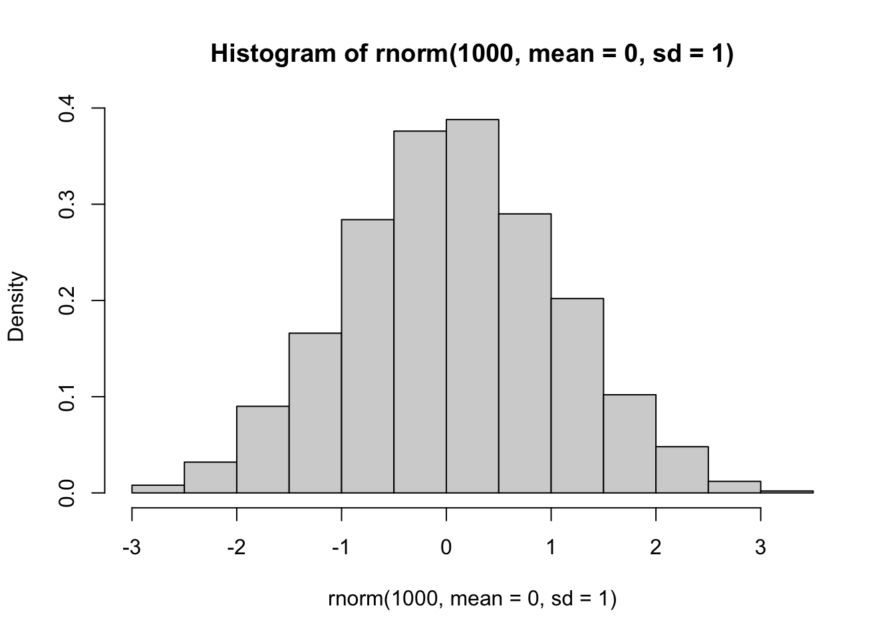
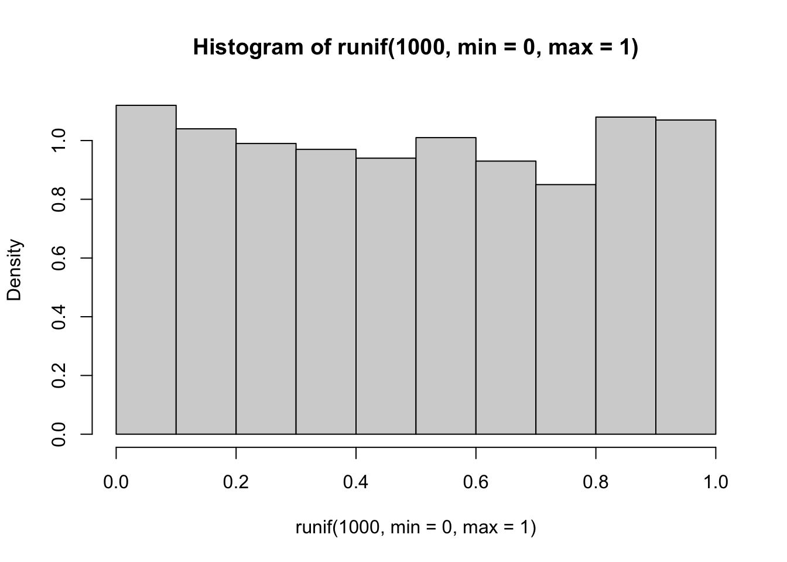
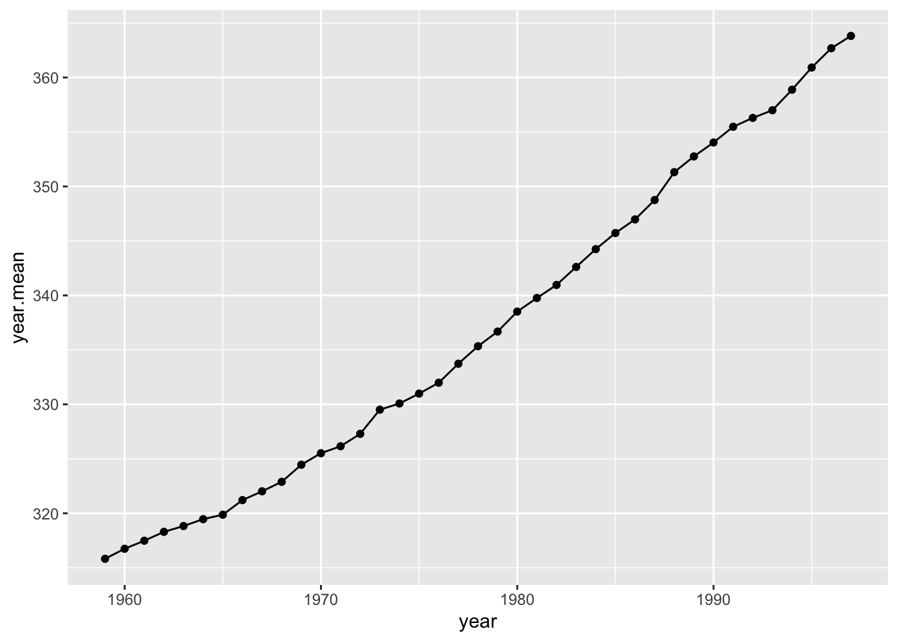

Randomizations: Sampling from sets and probability distributions
Dai Shizuka
updated 08/24/25
In this module, we will introduce several functions that are useful for randomization and sampling from distributions. These techniques are broadly used for both statistics as well as simulations, and they are super useful toolkits for you to have in your arsenal for research.
1. Random number generators
sample() and rnorm(). These are two
examples of functions that help you generate random numbers from some
probability distributoin. But if you think about it, there is an
infinate number of ways to sample a random set of numbers1. Understanding these
functions can be really useful in crafting randomization tests,
bootstrapping, and simulations.
Let’s consider some options:
1.1 Sampling from a given set of numbers with or without replacement.
We often want to generate a set of random number given some distribution. Say, for example, we want to sample randomly from a set of numbers. For example, let’s sample 5 integer between 1 and 10.
sample(1:10, 5, replace=F) #5 random numbers between 1 and 10## [1] 2 4 8 9 3You will probably notice that you have generated a different
set of random numbers than what is shown here. This makes sense, but it
makes it difficult to make this code reproducible. What we can
do is to use set.seed() to make this process
repeatable:
set.seed(2) #you can put whatever number inside set.seed()
sample(1:10, 5, replace=F) #5 random numbers between 1 and 10s## [1] 5 6 9 1 10When you run the code like this, you should always get “2, 7, 5, 10,
6”
Try changing the number inside the set.seed() and see what
you get.
Note that we have used replace=F to
indicate that, once we choose a number, we want to avoid choosing it
again. This is akin to physically picking 5 cards out of a set of 10 at
the same time. We can do that up to the sample size, but no more. So,
this will work:
set.seed(2)
sample(1:10, 10, replace=F) #10 random numbers between 1 and 10## [1] 5 6 9 1 10 7 4 8 3 2But this will NOT work:
sample(1:10, 11, replace=F) #11 random numbers between 1 and 10## Error in sample.int(length(x), size, replace, prob): cannot take a sample larger than the population when 'replace = FALSE'In the first iteration, you have simply shuffled the order of the numbers. But you cannot shuffle 11 cards out of a deck of 10.
Compare this to the case when we set replace=TRUE:
set.seed(2)
sample(1:10, 10, replace=T) #10 random numbers between 1 and 10## [1] 5 6 6 8 1 1 9 2 1 3You will notice that we have chose some numbers multiple times (“2”
appears three times, “10” and “6” appear twice). When you set
replace=TRUE, we are basically simulating a situation where
we choose a card, write down the number, and then put it
back before picking up another card. This process is the
essence of a simulation procedure called
bootstrapping.
A quick recap:
sample(x, n)allows you to randomly sample n numbers from the setx.replace=F(default) means once you sample one number, you will not sample it again. You can use this to shuffle the order of numbers (generally called randomization)replace=Tallows for sampling a number more than once. You can use this to resample a set of numbers with equal probability (generally called bootstrapping)
1.2 Sampling from probability distributions
Rather than sampling from a discrete set of numbers, we might want to sample numbers from a given hypothetical distribution. As an illustration, let’s sample a set of 100 numbers from a normal distribution with mean of 0 and standard deviation of 1
set.seed(2)
rn=rnorm(10, mean=0, sd=1)
rn## [1] -0.89691455 0.18484918 1.58784533 -1.13037567 -0.08025176 0.13242028
## [7] 0.70795473 -0.23969802 1.98447394 -0.13878701You can see that it generates numbers with 8 digits. We can generate
a histogram and check to see if the output of the
rnorm() function really looks like a normal distribution.
Let’s do it with 1,000 numbers so that we reduce sampling error.
set.seed(2)
hist(rnorm(1000, mean=0, sd=1), freq=F)
Looks about right.
Now let’s try the same thing but with a uniform distribution of numbers ranging from 0 to 1
set.seed(2)
runif(10, min=0, max=1)## [1] 0.1848823 0.7023740 0.5733263 0.1680519 0.9438393 0.9434750 0.1291590
## [8] 0.8334488 0.4680185 0.5499837hist(runif(1000, min=0, max=1), freq=F)
1.3 Coin-flips
We can use the rbinom() function to simulate coin-flips,
i.e., generating 0s and 1s randomly.
- Flipping the coin 100 times, keeping track of result each time.
set.seed(2)
coin=rbinom(100, 1, prob=0.5) #100 trials of a single flip of the coin
coin## [1] 0 1 1 0 1 1 0 1 0 1 1 0 1 0 0 1 1 0 0 0 1 0 1 0 0 0 0 0 1 0 0 0 1 1 1 1 1
## [38] 0 1 0 1 0 0 0 1 1 1 0 1 1 0 0 1 1 0 1 1 1 1 1 1 1 1 0 1 0 0 0 0 0 0 0 0 0
## [75] 0 1 0 1 0 1 0 1 0 0 0 1 1 0 1 0 1 0 0 1 0 0 0 0 0 0table(coin) #generate a table of results## coin
## 0 1
## 55 45sum(coin)/length(coin) #calculate probability of 1## [1] 0.45- Flipping the coin 100 times, but with skewed probability
set.seed(2)
flip=100
coin4=rbinom(100, 1, prob=0.25)
table(coin4)## coin4
## 0 1
## 72 28- 10 trials of 100 fair coin flips
set.seed(2)
flips=100
coin2=rbinom(10, flips, prob=0.5)
coin2## [1] 48 47 59 45 46 54 50 58 58 521.4 Table of probability distributions
| Distribution | Function to generate numbers |
|---|---|
| Beta | rbeta() |
| Binomial | rbinom() |
| Chi-square | rchisq() |
| Exponential | rexp() |
| Gamma | rgamma() |
| Geometric | rgeom() |
| Logistic | rlogis() |
| Log Normal | rlnorm() |
| Negative Binomial | rnbinom() |
| Normal | rnorm() |
| Poisson | rpois() |
| Uniform | runif() |
| Weibull | rweibull() |
2. Resampling Techniques: Randomization, Bootstrapping, and Jackknifing
In statistics, “resampling” techniques are often used to overcome limitations in inference if you are not sure if your result is due to sampling error. In brief: when we collect data, we end up with the dataset that we have. But what if you conducted the same study again: how likely would you be to get the same answer? Broadly speaking, you can ask this question (to some degree) by “resampling” your data. There are three basic flavors of resampling:
Randomization, or Permutation is when you resample all of the data that you have, but in randomized order.
Bootstrapping is when you randomly resample all observed values, but with replacement. This procedure essentially simulates sampling error and is useful when you can make the assumption that your sample generally represents the true distribution, but you want to account for sampling error. It is often used when you just have one set of samples, but you want to simulate a situation where you had a large set of samples with the same underlying distribution of values (but with different sampling error).
Jackknifing is when you randomly subsample some of your observations. This procedure is useful when you have a sufficiently large dataset, but you want to test the stability of your metric (i.e., what is the range of values might your estimate take if you were missing some data). For example, you might use this procedure to generate a confidence interval around your metric of interest.
2x2 classification of resampling strategies, from Rodgers 1999 2
2.1. Correlation test with randomization/permutation
To demonstrate how one might use a permutation test, let’s try to compare P-values generated from a Pearson product-moment correlation test vs. a permutation test.
2.1.1. Pearson correlation example using trees data
As an example, let’s use the trees dataset from base R.
This dataset contains girth (diameter), height and volume estimates for
31 black cherry trees.
head(trees)## Girth Height Volume
## 1 8.3 70 10.3
## 2 8.6 65 10.3
## 3 8.8 63 10.2
## 4 10.5 72 16.4
## 5 10.7 81 18.8
## 6 10.8 83 19.7We can plot the relationship between tree girth and height:
plot(Height~Girth, data=trees, pch=19)It seems like there is some correlation there… Let’s do a Pearson’s correlation test to look at the correlation coefficient and the P-value from this test:
cor.test(trees$Girth,trees$Height)##
## Pearson's product-moment correlation
##
## data: trees$Girth and trees$Height
## t = 3.2722, df = 29, p-value = 0.002758
## alternative hypothesis: true correlation is not equal to 0
## 95 percent confidence interval:
## 0.2021327 0.7378538
## sample estimates:
## cor
## 0.5192801The correlation coefficient = 0.52. Based on the product-moment correlation test, the P-value = 0.0028
2.1.2. Now calculate P-value with randomization/permutation test
To do this, we are going to first save the observed correlation coefficient.
obs.cor=cor(trees$Girth,trees$Height)
obs.cor## [1] 0.5192801Now, we want to figure out how to get a correlation coefficient after
permuting the data. To do this, let’s run on iteration of the resampling
of tree height data. We can do this using the sample()
function.
Here’s the raw tree height data:
trees$Height## [1] 70 65 63 72 81 83 66 75 80 75 79 76 76 69 75 74 85 86 71 64 78 80 74 72 77
## [26] 81 82 80 80 80 87Here is one iteration of permutation of the tree height data
sample(trees$Height, length(trees$Height), replace=F)## [1] 80 80 74 72 79 83 80 69 75 80 76 72 87 81 77 66 74 78 64 86 65 71 82 63 80
## [26] 75 70 76 81 75 85To get a correlation coefficient with permuted data, we just put that
resampled data inside the cor() function:
cor(trees$Girth, sample(trees$Height, length(trees$Height), replace=F))## [1] -0.03450754Now, we run this whole routine a large number of times (10,000 times)
rep=10000
rand.cor=vector(length=rep)
for(i in 1:rep){
rand.cor[i]=cor(trees$Girth, sample(trees$Height, length(trees$Height), replace=F))
}Here, we plot a histogram of the correlation coefficient from the permutations, and a red line to indicate the observed correlation coefficient.
hist(rand.cor, xlim=c(-1,1))
abline(v=obs.cor, lty=2, col="red")Now, we can calculate a P-value from a randomization test in two ways: A one-tailed test, or two-tailed test. A one-tailed test tests the hypothesis with a specific directionality of an effect. For example, that the observed correlation coefficient is specifically MORE POSITIVE than random expectation. In contrast, a two-tailed test would test the hypothesis that the absolute value of the observed correlation coefficient is larger than the distribution of absolute values generated by random chance. The standard Pearson’s correlation test above generates the P-value for the two-tailed test. Here, we can do either:
p.onetail=length(which(rand.cor>=obs.cor))/rep
round(p.onetail, digits=3)## [1] 0.001p.twotail=length(which(abs(rand.cor)>=abs(obs.cor)))/rep
p.twotail## [1] 0.0022We should get a very similar P-value to the original correlation test (P = 0.0028)
2.2. Resampling with bootstrapping vs. jackknifing
Now, let’s do a quick example of a bootstrapping and jackknifing test. Start with loading tidyverse.
library(tidyverse)2.2.1. The co2 dataset
We’ll use the co2 dataset in base R. This is a
timeseries of atmospheric \(CO_2\)
levels measured at Manua Loa since January 1959 to December 1997.
co2Since this is a “timeseries” object, the first thing I want to do is convert it into a data frame (manually).
To do this, I will first create objects for months (1 through 12) and
years (1959 through 1997). Then, I can use a nifty function called
expand.grid() that will create a two-column matrix of all
possible combinations of month x year.
years=1959:1997
months=1:12
expand.grid(months, years)[1:20,] #just showing the first 20 rows of this.## Var1 Var2
## 1 1 1959
## 2 2 1959
## 3 3 1959
## 4 4 1959
## 5 5 1959
## 6 6 1959
## 7 7 1959
## 8 8 1959
## 9 9 1959
## 10 10 1959
## 11 11 1959
## 12 12 1959
## 13 1 1960
## 14 2 1960
## 15 3 1960
## 16 4 1960
## 17 5 1960
## 18 6 1960
## 19 7 1960
## 20 8 1960So we can use this to create a data frame with columns for month, year, and \(CO_2\) levels. Then I’ll name the columns.
co2.dat=data.frame(expand.grid(months, years), as.numeric(co2))
names(co2.dat)=c("month", "year", "value")
head(co2.dat)## month year value
## 1 1 1959 315.42
## 2 2 1959 316.31
## 3 3 1959 316.50
## 4 4 1959 317.56
## 5 5 1959 318.13
## 6 6 1959 318.002.2.2. Get annual averages
Now, I will use group_by() and summarise()
to create an annual avearage dataset.
co2.annual=co2.dat %>% group_by(year) %>% summarise(year.mean=mean(value))
co2.annual## # A tibble: 39 × 2
## year year.mean
## <int> <dbl>
## 1 1959 316.
## 2 1960 317.
## 3 1961 317.
## 4 1962 318.
## 5 1963 319.
## 6 1964 319.
## 7 1965 320.
## 8 1966 321.
## 9 1967 322.
## 10 1968 323.
## # ℹ 29 more rowsI can plot the change in annual average \(CO_2\) over time.
ggplot(co2.annual, aes(x=year, y=year.mean))+ geom_line() + geom_point()
Calculate slope of this relationship from observed data:
lm.fit=(lm(year.mean~year, data=co2.annual))
summary(lm.fit)##
## Call:
## lm(formula = year.mean ~ year, data = co2.annual)
##
## Residuals:
## Min 1Q Median 3Q Max
## -2.4467 -1.1919 -0.5012 1.2712 3.6718
##
## Coefficients:
## Estimate Std. Error t value Pr(>|t|)
## (Intercept) -2.255e+03 4.586e+01 -49.17 <2e-16 ***
## year 1.310e+00 2.319e-02 56.52 <2e-16 ***
## ---
## Signif. codes: 0 '***' 0.001 '**' 0.01 '*' 0.05 '.' 0.1 ' ' 1
##
## Residual standard error: 1.63 on 37 degrees of freedom
## Multiple R-squared: 0.9885, Adjusted R-squared: 0.9882
## F-statistic: 3194 on 1 and 37 DF, p-value: < 2.2e-16obs.slope=summary(lm.fit)$coefficients[2,1]
obs.slope## [1] 1.3104992.2.3. Bootstrap monthly temperature data
We can test how robust the estimate of the slope is to sampling error of the monthly measurements. One way to do this is to use a bootstrapping procedure.
One iteration of a bootstrap procedure:
co2.boot=co2.dat %>% group_by(year) %>%
summarise(mean.boot=mean(sample(value, 12, replace=T)))
ggplot(co2.boot, aes(x=year, y=mean.boot))+ geom_line() + geom_point()Do this 1,000 times to generate confidence interval for the slope:
times=1000
boot.fits=list()
for(i in 1:times){
co2.boot=co2.dat %>% group_by(year) %>%
summarise(mean.boot=mean(sample(value, 12, replace=T)))
boot.fits[[i]]=lm(mean.boot~year, data=co2.boot)
}
boot.slopes=sapply(boot.fits, function(x) summary(x)$coefficients[2,1])
hist(boot.slopes)ci.slopes.boot=quantile(boot.slopes, probs=c(0.025, 0.975))
ci.slopes.boot## 2.5% 97.5%
## 1.295146 1.3249642.2.4. Jackknife monthly measurements
Now do the same with a jackknife procedure:
times=1000
jk.fits=list()
for(i in 1:times){
co2.jk=co2.dat %>% group_by(year) %>%
summarise(mean.jk=mean(sample(value, 6, replace=F)))
jk.fits[[i]]=lm(mean.jk~year, data=co2.jk)
}
jk.slopes=sapply(jk.fits, function(x) summary(x)$coefficients[2,1])
hist(jk.slopes)
ci.slopes.jk=quantile(jk.slopes, probs=c(0.025, 0.975))
ci.slopes.jk## 2.5% 97.5%
## 1.294935 1.326785In both cases, the confidence interval of the slope estimate is quite robust to sampling error (as would expected for such a strong relationship).
Strictly speaking, we can only generate pseudo-random numbers–the computer can use an algorithm that generates numbers that are indistinguishable from random, but it is not truly random as long as we are using some algorithm to generate it.↩︎
Rodgers, J. L. (1999). The bootstrap, the jackknife, and the randomization test: A sampling taxonomy. Multivariate behavioral research, 34(4), 441-456.↩︎